བཤེར་ཆས་ Fi-7160
ཉར་ཚགས་(འདིའི་ཉར་ཚགས་ནི་རྩ་ཆེའི་ནང་བསྟན་དཔེ་ཆ་རྣམས་ཀྱི་མ་ཕྱི་རྣམས་བསྐལ་བ་ཇི་སྲིད་གནས་པ་དེ་སྲིད་དུ་གནས་ཆེད་ཨ་རིའི་ཧཱ་ཝར་གཙུག་ལག་སློབ་ཆེན་གྱི་ཉར་ཚོགས་དཔེ་མཛོད་དང་ནང་དཔེ་ཚོགས་ལྟེ་གནས་ཀྱི་ཉར་ཚགས་དཔེ་མཛོད་གཉིས་ཀྱི་ཉར་ཚགས་བྱེད་བཞིན་བའི་དོན་ཡིན།)ནི་གོང་གསལ་བཞིན་པར་ཆེ་བ་དེ་ཆ་གཅིག་ཨ་རིའི་ཧཱ་ཝར་གཙུག་ལག་སློབ་ཆེན་གྱིས་ཉར་རྒྱུ་དང་ཆ་གཅིག་ངེད་ནང་བསྟན་དཔེ་ཚོགས་ལྟེ་གནས་ཀྱིས་ཉར་ཚགས་བྱེད་རྒྱུ་བཅས་ཡིན། བཤེར་འབེབས་སྙི་ཆས་ཕབ་ལེན་བྱེད་ཚུལ། དྲ་སྦྲེལ། སྤྱིར་བཤེར་ཆས་རིགས་སྣ་ཚོགས་ཤིག་ ཡོད། འདིར་ང་ཚོས་སྤྱོད་བཞིན་པ་ནི་ Fujitsu 富士通 ཟེར་བའི་བཤེར་ཆས་རིགས་ཡིན། རྒྱས་པར་ཤེས་འདོད་ན་གོང་གི་དྲ་བྱང་ལ་གཟིགས་རོགས།
བཤེར་ཆས་ལའང་རིགས་གཉིས་ཡོད་མོད་འདིར་དགོས་དབང་གིས་བཤེར་ཆས་Scanner Fi-7160 བཀོལ་སྤྱོད་ཀྱི་རིམ་བ་ངོ་སྤྲོད་རོབ་ཙམ་བྱ། བཤེར་ཆས་འདི་ནི་རྩིས་འཕྲུལ་ལ་མཐུད་ནས་དཔེ་ཆ་བཤེར་འབེབས་དང་བཤེར་པར་ཞིབ་འཇུག་བཅས་འདི་བརྒྱུད་ནས་བྱེད་དགོས་པ་ཡིན། འདི་དག་ཚང་མ་རྩིས་འཕྲུལ་ དང་འབྲེལ་དགོས་དུས་རྩིས་འཕྲུལ་དང་བཤེར་ཆས་གཉིས་མཐུད་སྦྱོར་བྱེད་པའི་སྙི་ཆས་འདི་རྩིས་འཕྲུལ་ནང་ཕབ་ལེན་བྱེད་དགོས།
སྙི་ཆས་དེ་རྩིས་འཕྲུལ་ནང་ཕབ་ལེན་བྱེད་ཚུལ་གཉིས་ཡོད་མོད། འདིར་དྲ་སྦྲེལ་འདི་ནས སྙི་ཆས་དག་ཐད་ཀར་ཕབ་ལེན་བྱེད་ཐུབ་པ་ཡིན།

རྩིས་འཕྲུལ་ནང་ཡིག་སྣོད་མ་ལག་བཟོ་སྟངས།
གཤམ་ནས་དང་པོ་ཕབ་ལེན་གྱི་རིམ་པ་ལེགས་པར་གྲུབ་རྗེས་རྩིས་འཕྲུལ་ནང་ཡིག་སྣོད་མ་ལག་ཇི་ལྟར་བཟོ་དགོས་མིན་གྱི་ལམ་སྟོན་དཔེ་རིས་ལམ་ནས་འགོད་པར་བྱ།

འདི་ནི་ཁྱེད་ཀྱིས་ཡིག་སྣོད་ཇི་ལྟར་བཟོ་དགོས་པའི་རྣམ་པ་རེད། དཔེ་རིས་ངོས་སུ་གསལ་བ་བཞིན་ཁྱེད་ཀྱིས་ཙི་ཙི་གཡས་གནོན་བྱོས་དང་དཔེ་རིས་དང་པོ་དེ་འཆར་ཡོང་། དེ་ ནས་དམར་རྟགས་བཀོད་ཡོད་ས་དེར་མདའ་རྩེ་ཞོག་དང་དེའི་གཡས་ཀྱི་སྒམ་ཆུང་དེ་རང་འགུལ་ཐོན་ཡོང་བ་ཡིན། དམར་རྟགས་བཀོད་ཡོད་ས་དེར་ནོན་དང་ཡིག་སྣོད་གསར་བ་དེ་རྩིས་འཕྲུལ་འཆར་སྒོའི་ངོས་སུ་གསལ་ཡོང་བ་དང་། ཡིག་སྣོད་གསར་བ་དེའི་གཤམ་ལ་ཡིག་སྣོད་ཀྱི་མིང་འབྲི་ས་ཡང་རང་འགུལ་གྱིས་འཆར་ཡོང་། གཤམ་གསལ་བཞིན།
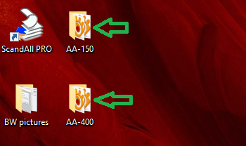
གོང་གི་དཔེ་རིས་ནི་གློག་ཀླད་ཀྱི་འཆར་ངོས་སུ་ཁྱེད་ཀྱི་ཡིག་སྣོད་བཟོས་ཚར་བའི་རྣམ་པ་རེད། འདི་ལྟར་ཁྱེད་ཀྱིས་བཤེར་འབེབས་བྱས་པའི་དཔེ་ཆ་རེ་རེ་ལ་ཡིག་སྣོད་རེ་རེ་བཟོ་དགོས་པར་མ་ཟད་པར་གྱི་གསལ་ཆ་གང་ཡིན་གྱིས་མིང་བཏགས་ན་ངོས་འཛིན་བྱེད་བདེ་
བའི་ཁྱད་པར་ཡོད། བཟོ་སྟངས་ཡང་འདི་དང་གཅིག་མཚུངས་ཡིན།
བཤེར་འབེབས་བྱེད་སྟངས་བཤད་པ་ལ།
དང་པོ། བཤེར་འབེབས་ཇི་ལྟར་བྱེད་དགོས་མིན་གྱི་ལམ་སྟོན་དཔེ་རིས་ལམ་ནས་འགོད་པར་བྱ། གཤམ་གྱི་དཔེ་ཪིས་ནི་ཁྱེད་ཀྱི་བཤེར་འབེབས་ལས་རིགས་ཁྲོད་མེད་དུ་མི་རུང་བའི་སྙི་ཆས་གལ་ཆེན་ཞིག་ཡིན། སྙི་ཆས་འདི་ནི་བཤེར་ཆས་གཉིས་ཆའི་སྒྲིག་འགོད་འདི་ནས་
བྱེད་དགོས་པ་དང་ཡིག་སྣོད་མ་ལག་ཡང་འདི་ནས་སྒྲིག་འགོད་བྱེད་དགོས་པ་ཡིན། འདི་ནི་བཤེར་ཆས་སྒྲིག་འགོད་བྱེད་སའི་སྙི་ཆས་སྒོ་ཕྱེ་ཡོད་པའི་རྣམ་པ་རེད། དམར་རྟགས་བཀོད་ཡོད་ས་དེར་ནོན་དང་སྒྲིག་འགོད་མ་ལག་གསལ་ཡོང་།
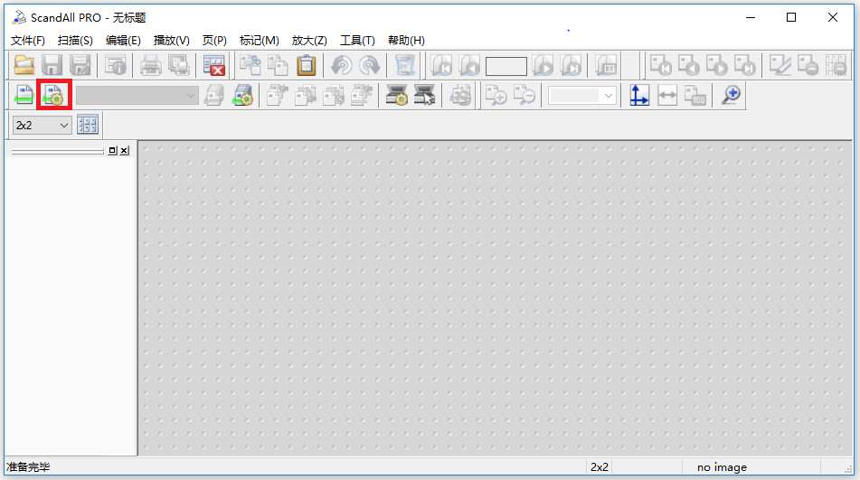
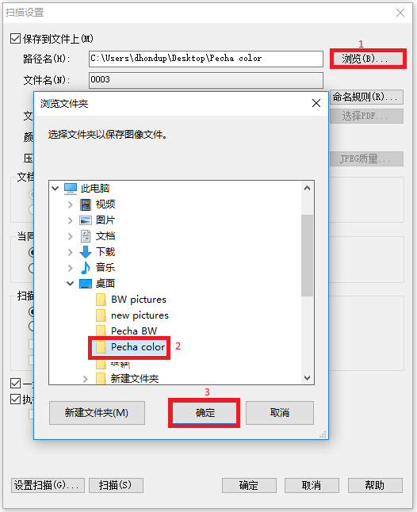
སྒྲིག་འགོད་རྟེགས་བུ་འདི་ནས་དང་པོ་ཡིག་སྣོད་ལེན་དགོས་དམར་རྟགས་དང་པོ་ནོན་དང་ཁྱེད་ཀྱིས་བཟོས་ཟིན་པའི་ཡིག་སྣོད་དེ་འཆར་ཡོང་ལ། དེའི་སྟེང་མནན་རྗེས་Ok སྟེང་ནོན་དང་འགྲིག་པ་ཡིན། མདོར་ན་དཔེ་རིས་སྟེང་བཀོད་པའི་ཨང་རིམ་ལྟར་ནོན་དང་མཐུས་པ་ཡིན།
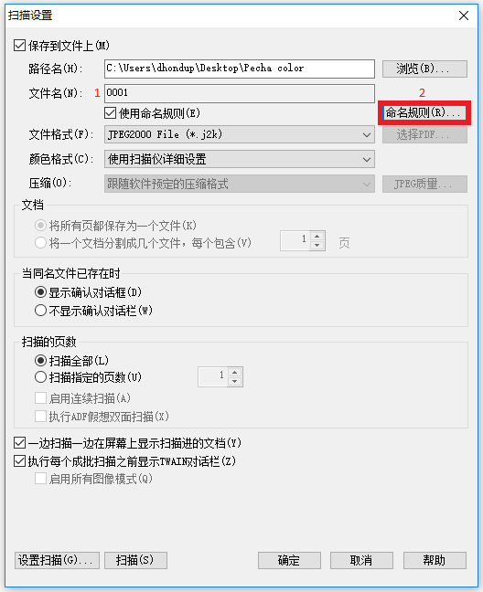
གོང་གི་དཔེ་རིས་སྟེང་གསལ་བའི་དང་པོ་དེ་ཁྱེད་ཀྱིས་བཤེར་འབེབས་བྱེད་རྒྱུའི་དཔེ་ཆའི་ཤོག་གྲངས་རེད། དེའི་ཨང་རིམ་དེའི་འོག་གི་ཨང་གཉིས་པའི་ནང་ནས་བསྒྲིག་དགོས་པ་ཡིན། དེ་ནས་དམར་རྟགས་བཀོད་ཡོད་སའི་གཉིས་པ་དེར་ནོན་དང་དེའི་ནང་གསེས་སྡེ་ཚན་གྱི་
དཀར་ཆག་སྟེགས་བུ་དེ་འཆར་ཡོང་། གཤམ་གྱི་དཔེ་རིས་ལ་གཟིགས།
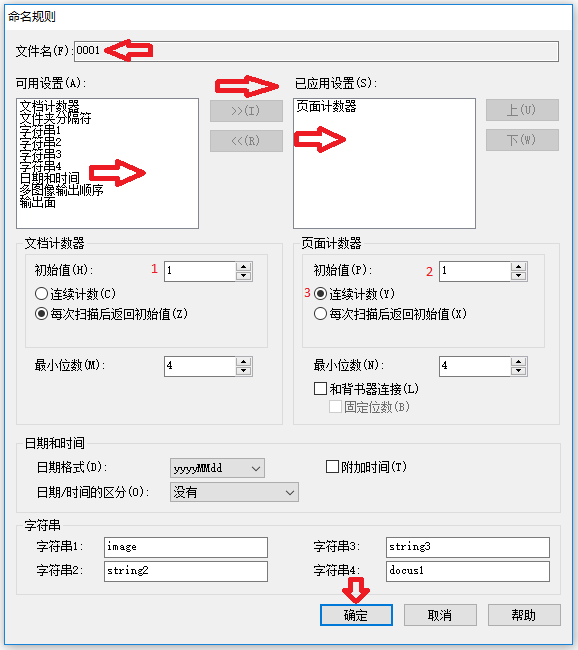
དཔེ་རིས་འདིའི་སྒང་གི་མདའ་རྩེ་དམར་པོ་རྣམས་ནི་དཔེ་ཆའི་ཤོག་གྲངས་དང་ཟླ་ཚེས་རིགས་འགོད་ས་རེད། འོན་ཀྱང་། ང་ཚོར་དེའི་འོག་ན་ཨང་གྲངས་བཀོད་ཡོད་ས་དེའི་ཨང་གཉིས་པ་དེ་ཤོག་གྲངས་ཁོ་ན་མ་གཏོགས་མི་དགོས་པ་ཡིན། ཨང་གསུམ་པ་དེ་ལ་ནང་གསེས་གདམ་ཁ་གཉིས་ཡོད་པའི་གོང་མ་དེ་འདེམས་དགོས། དེ་ནས་ 確定 སྟེང་ནོན།

གོང་གི་དཔེ་རིས་ནི་པར་གྱི་རིགས་འདེམས་ས་རེད། ང་ཚོར་མཁོ་བའི་པར་ནི་ཚོན་ལྡན་ཁོ་ན་ཡིན་ཕྱིན་ JPEG 2000 ངེས་པར་འདེམས་དགོས་པ་ཡིན།
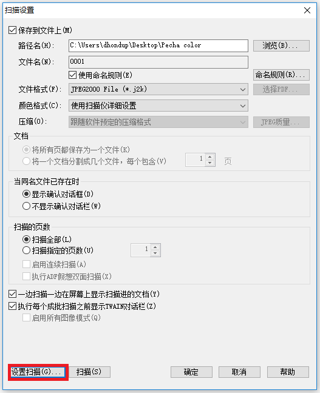
འདིར་དམར་རྟགས་བཀོད་ཡོད་ས་དེ་འདེམས་དགོས། འདིའི་ངོས་ཀྱི་སྒྲིག་འགོད་དེ་ཙམ་གྱིས་འགྲིག་པ་ཡིན།
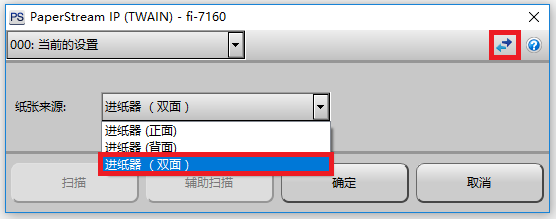
དཔེ་རིས་འདིའི་གཤམ་གྱི་ཟུར་ན་ཡོད་པའི་དམར་རྟགས་དེར་ནོན་དང་དེའི་ནང་གསེས་སྡེ་ཚན་གྱི་དཀར་ཆག་དེ་ཁྱེད་ཀྱི་མིག་སྔར་སྟོན་ཡོང་།
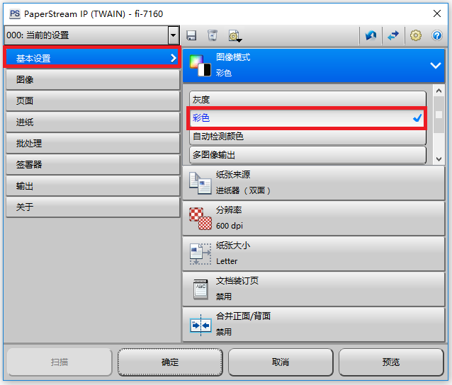
གོང་གི་དཀར་ཆག་སྟེགས་བུ་དེ་འཆར་བ་དང་དམར་རྟགས་ཆེ་བ་བཀོད་ཡོད་ས་དེ་འདེམས་དགོས། དེ་ནས་དམར་རྟགས་ཆུང་བ་བཀོད་ཡོད་ས་དེའི་སྟེང་ནོན་དང་དེའི་ ནང་གསེས་སྡེ་ཚན་གྱི་དཀར་ཆག་སྟེགས་བུ་ཞིག་འཆར་ཡོང་།
དང་པོ། གོང་གི་དཔེ་རིས་ནི་TWAIN སྙི་ཆས་ཀྱི་རྨང་གཞིའི་སྒྲིག་འགོད་སྟེགས་བུ་རེད། འདིའི་སྡེ་ཚན་དང་པོ་ནས་འདེམས་དགོས་པ་ཁག དང་པོ། ཚོན་མདོག་འདེམ་དགོས།
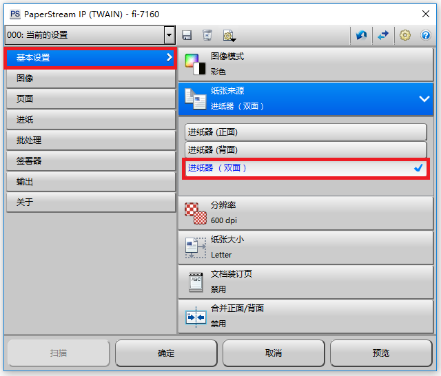
གཉིས་པ། ཤོག་གུའི་རྒྱབ་མདུན་གཉིས་ཆ་ 双面 འདེམས་དགོས། 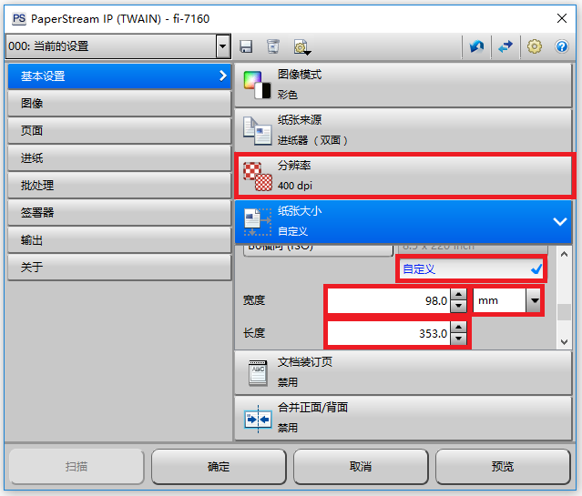
གསུམ་པ། དཔེ་རིས་ངོས་སུ་གསལ་བ་བཞིན་ dpi 400 ངེས་པར་འདེམས་དགོས། བཞི་བ། ཤོག་ལྡེབས་ཀྱི་ཆེ་ཆུང་འདེམས་དགོས། འདིར་དཔེ་རིས་ངོས་སུ་གསལ་བ་བཞིན་ཁྱེད་ཀྱིས་བཤེར་འབེབས་བྱེད་རྒྱུའི་དཔེ་ཆ་དེ་དེབ་གཟུགས་དང་པོ་ཏིའི་རིགས་གང་ཡིན་ རུང་ཐིག་ཤིང་སྤྱད་དེ་ཚད་བརྒྱབ་རྗེས་ཨང་སྒམ་འདི་སྐོང་དགོས། གལ་ཏེ་ཚད་མ་བརྒྱབ་ན་དཔེ་ཆའི་མགོ་གཞུག་དང་ཡང་ན་ཕྱོགས་གང་རུང་ཞིག་ནས་གཏུབ་འགྲོ་བ་དང་ཡང་ན་ཤོག་སྟོང་ཐོལ་བ་སླེབ་ཡོང་གི་ཡོད། དེའི་ཕྱིར་ཚད་རྒྱག་རྒྱུ་གལ་ཆེན་ཡིན།


གོང་གི་དཔེ་རིས་ནི་དཔེ་ཆ་ཁག་ལ་ཚད་ཇི་ལྟར་འཇལ་དགོས་པའི་དཔེ་མཚོན་རེད། སྡེ་ཚན་འདི་ནས་རང་འགུལ་自动 འདེམས་དགོས། འདིའི་གཞན་ཚང་མ་ 禁用 འདེམས་པས་ཆོག 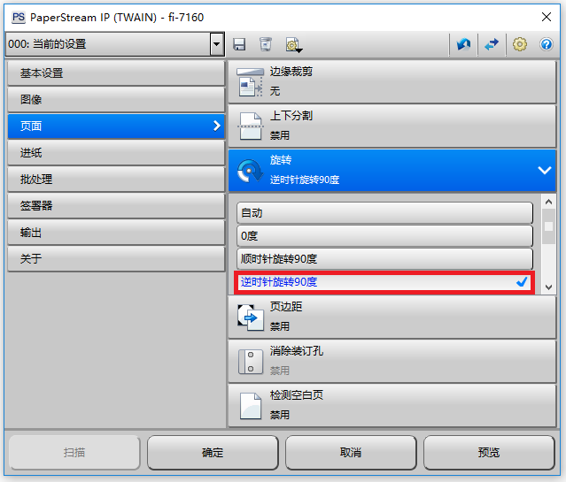
གོང་གི་དཔེ་རིས་ངོས་སུ་གསལ་བ་བཞིན་གལ་ཏེ་ཁྱེད་ཀྱིས་བཤེར་འབེབས་བྱེད་རྒྱུའི་དཔེ་ཆ་དེ་པོ་ཏིའི་རིགས་ཡིན་ན་༩༠ འོག་མ་དེ་ངེས་པར་འདེམས་དགོས་པ་ཡིན།
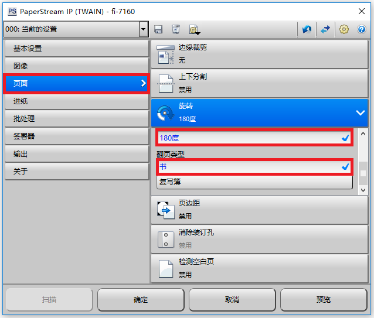
གོང་གསལ་བཞིན་དཔེ་དེབ་རིགས་ཡིན་ན་180 དང་དེའི་གཤམ་གྱི་ 书 ཞེས་པ་དེ་འདེམས་དགོས།
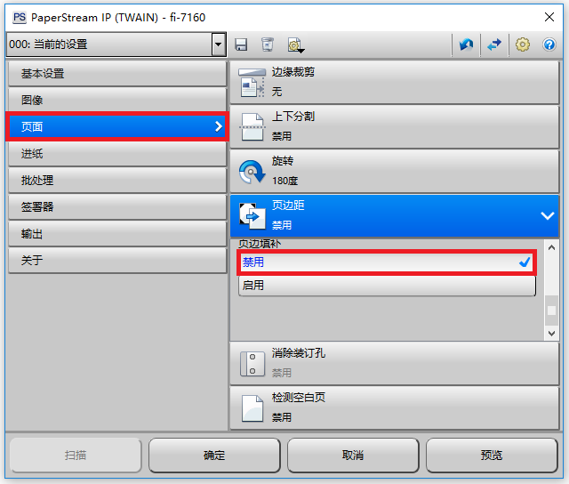
གོང་གི་དཔེ་རིས་དེའི་ནང་གསལ་བ་བཞིན་སྡེ་ཚན་འདིའི་ནང་གི་ 禁用 ཟེར་བ་དེ་འདེམས་དགོས། དེ་མ་འདེམས་ན་པར་མཐའི་ཤོག་སྟོང་ཆེན་པོ་ཞིག་ལྷག་ཡོང་། དེའི་ཕྱིར་འདི་ངེས་པར་འདེམས་དགོས་པ་ཡིན།

སྒྲིག་འགོད་འདིའི་ནང་ཚང་མ་ 禁用 འདི་འདེམས་པས་ཆོག
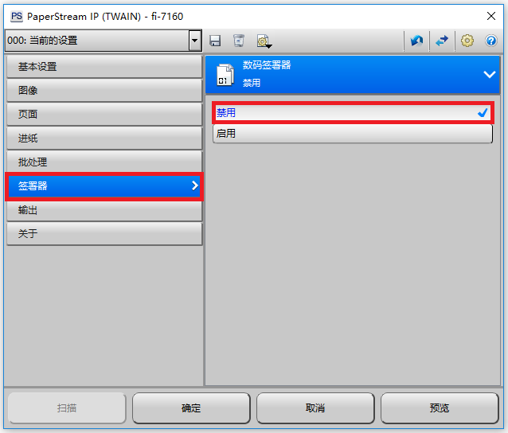
དཔེ་རིས་ནང་གསལ་བཞིན་ 禁用 འདི་འདེམས་དགོས།
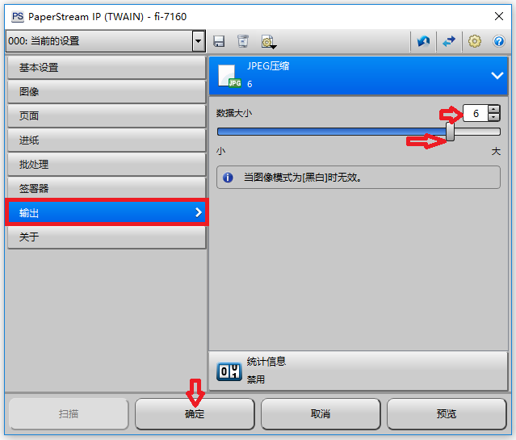
སྡེ་ཚན་འདི་ནས་བཤེར་པར་གྱི་སྤུས་ཀ་བཟང་ཞན་ཚོད་འཛིན་བྱེད་ཐུབ་པ་ཡིན། མཐོ་ཤོས་ཨང་༧ དེ་ནས་རང་འདོད་ཀྱིས་འདེམས་ཆོག

འདི་ནི་བཤེར་ཆས་ནང་དཔེ་ཆ་བཞག་སྟེ་བཤེར་འབེབས་འགོ་རྩོམ་བཞིན་བའི་དཔེ་མཚོན་རེད། གྲ་སྒྲིག་ལེགས་པར་བྱས་རྗེས། གཤམ་གྱི་དཔེ་རིས་ལ་གཟིགས།
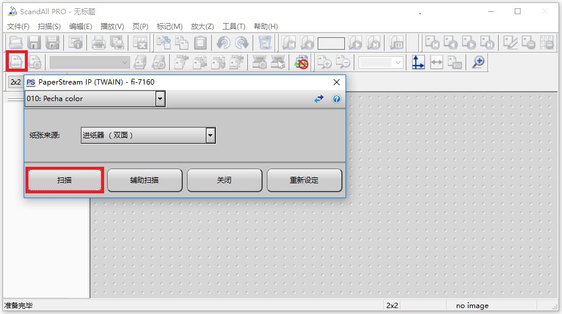
པར་སྣོད་དང་བཤེར་ཆས་སྒྲིག་འགོད་མ་ལག་ལེགས་པར་བསྒྲིག་རྗེས། འདིར་དམར་རྟགས་བཀོད་ཡོད་ས་དེར་ནོན་དང་དཔེ་རིས་ངོས་སུ་གསལ་བ་བཞིན་དེའི་ནང་གསེས་དཀར་ཆག་སྟེགས་བུ་དེ་འཆར་ཡོང་། དེའི་རྗེས་དམར་རྟགས་བཀོད་ཡོད་ས་དེར་ནོན་དང་བཤེར་འབེབས་བྱེད་ཡོང་བ་ཡིན།
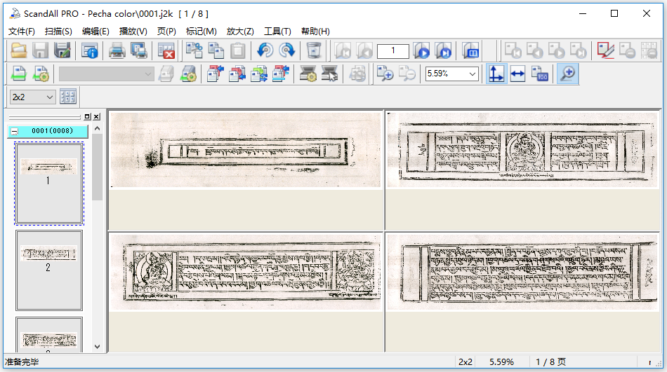
འདི་ནི་ཁྱེད་ཀྱིས་བཤེར་འབེབས་བྱས་པའི་དཔེ་པར་ཁག་བཤེར་ཆས་སྟེགས་བུའི་ནང་འབྱོར་ཡོད་པའི་རྣམ་པ་རེད།
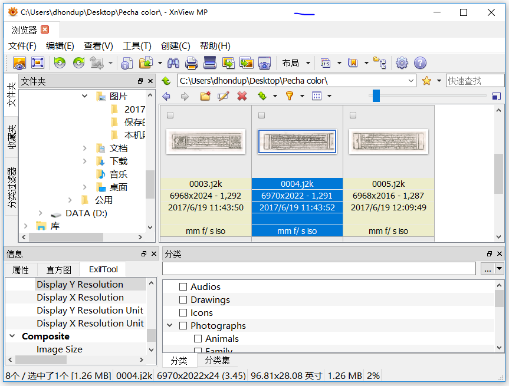
དཔེ་རིས་འདི་ནི་བཤེར་འབེབས་བྱས་པའི་པར་རྣམས་ཁྱེད་ཀྱི་པར་སྣོད་ནང་སླེབས་ཡོད་པའི་རྣམ་པ་རེད། པར་ཁ་འབྱེད་ས་དེ་ Xnview ནང་འབྱེད་དགོས་པ་ཡིན། སྙི་ཆས་འདིའི་འགྲེལ་བཤད་སྡེ་ཚན་གཞན་པའི་ནང་བྱེད་ཡོང་།